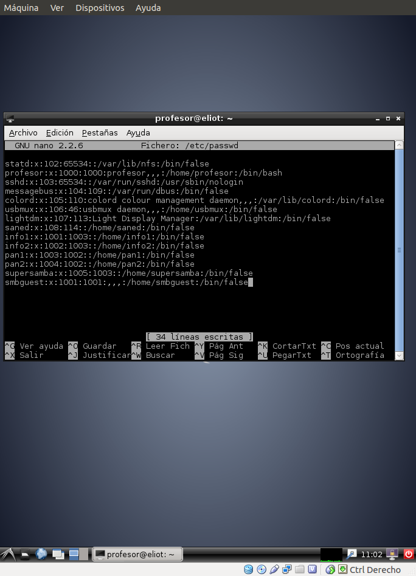

- Módulo: Sistemas Operativos
- Título del trabajo A2: Recursos compartidos (Comandos)
- Componentes del grupo: Eliot farrais García
- Curso Académico: 2013/2014
- Fecha de entrega: 21 de febrero de 2014
Vamos a GNU/Linux, y creamos los siguientes grupos y usuarios: Grupo informaticos con info1, info2 y supersamba Grupo panaderos con pan1 y pan2 y supersamba Crear el usuario smbguest.
Creamos los usuarios
Creamos los grupos
Creamos las carpetas con sus permiso
Hacemos una copia de seguridad del archivo y creamos uno de nuevo
Añadimos los usuarios a samba
Reiniciamos el servicio Samba
Configuramos la red
Primero comprobar el uso de las siguientes herramientas: smbtree smbclient --list ip-servidor-samba
Ahora creamos el montaje local
Vemos que el recurso ha sido montado
Nos vamos a entornos de red y elejimos panaderos
Ponemos usuario y contraseñas de pan1
Y accedemos al recurso